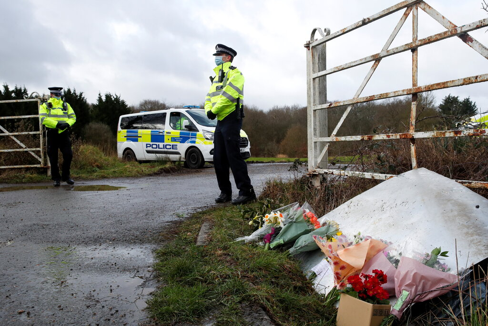

Gold Spa, one of three Asian-owned massage parlors in the Atlanta area that were targeted by a white shooter.
During the Atlanta massage parlor shootings, eight people were murdered. Statement made by the shooter, Robert Long had sparked further debate on racial and social issues
|
| 
A police officer was charged late Friday with kidnapping and murdering Sarah Everard, a marketing executive who went missing in South London last week and whose disappearance had touched off a national outcry over violence against women.
The Metropolitan Police said that the officer, Wayne Couzens, 48, whose primary role was patrolling diplomatic premises, would appear in court on Saturday to face the charges. |